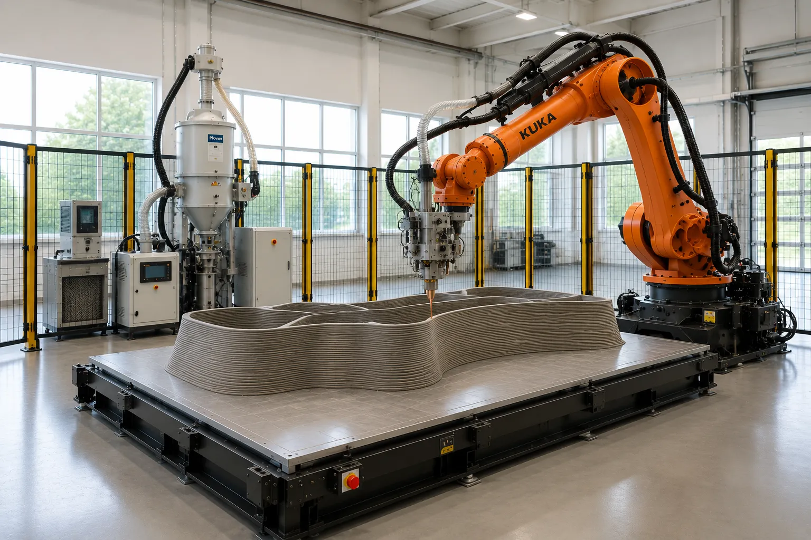

Implementation plan — platform, wiring & software. An interactive build guide and bill of materials.
The full cell in operation — the 6-axis arm carrying the pellet head over a heated build platform, with the hopper dryer and feed chain behind a guarded fence.

Every aspect of the conversion in depth — mechanical & tool flange, electrical & DeviceNet I/O, safety, software & simulation, calibration, commissioning, and a full materials reference. Available as a web manual and a downloadable PDF.
A 6-axis KUKA arm carries a pellet extruder and prints large parts directly from plastic granules — no filament. The heavy-payload arm, the extruder, and the full feedstock chain are in hand; the work ahead is integration, a build platform, and safety.

Barrel heat · bed PID · chamber · dryer — each runs on its own controller, not the robot.

Digital output $OUT[n]Extrude on print moves, stop on travel moves.
Analog output $ANOUT[1]0–10 V proportional to sliced flow rate.
Digital input $IN[n]Pause the print on an extruder fault.
Barrel heat zones, the heated bed, the chamber, and the dryer each run on their own controllers. The robot never manages temperature — which keeps the integration small and robust.

Safety-circuit wiring must be done and validated by a qualified machine-safety integrator — not improvised with permanent jumpers.
The KR C2 talks to the world over DeviceNet. Add a small remote-I/O island; that is the whole integration core.
iosys.iniCalibrate so $ANOUT[1]=1.0 → 10 V = max extrude rate. Bench-test before any print.
Confirm the extruder control box accepts an external RUN + speed input before ordering the I/O island.
Slice the STL in Ultimaker Cura with the CuraToKRC2 plugin.
krl_config.json: tool A/B/C, HOME, Tool & Base numbers, flow constant. Enable Relative Extrusion.
Native .src/.dat, auto-split into subroutines to fit KR C2 RAM.
Copy files to the controller via USB or network share.
Robot follows the path; writes $ANOUT[1] for flow, toggles $OUT[n] for extrude on/off.
From CAD/STL to robot motion. For a KR C2 (KSS 5.x) the pragmatic path is offline KRL — generate, simulate, transfer. Don't stream for production printing.
| Path | Control model | Multi-axis | Cost | KR C2 fit |
|---|---|---|---|---|
| CuraToKRC2 | Static KRL, $ANOUT[1] flow | No (planar) | Free | Purpose-built; RAM-chunked |
| KUKA|prc | Parametric, full simulation | Yes (6-axis) | Free / €450 | Supported; LFAM precedent |
| RoboDK | Offline KRC2 post (3D-print mods built in) | Good | $3,995 | KRC2 / KRC2_DAT posts |
| ROS RSI | Streamed joint correction (12 ms) | Yes | Free | Confirmed on KSS 5.x — research-grade |
Start free with CuraToKRC2 to commission the $ANOUT[1] flow mapping and DeviceNet I/O on flat prints, move to RoboDK Professional (stock KUKA KRC2 post) for production, and reach for KUKA|prc only if you need non-planar / multi-axis. Avoid real-time streaming for production.
kuka_kr150_support meshes (or the RoboDK KR 150 R3100-2 model) to verify reach, collisions, and the BASE/TOOL frames before touching the arm. → Full software & simulation assessment in the Build Manual
Setup ▸ Measure ▸ Tool ▸ XYZ 4-pointTouch the nozzle tip to one fixed point from 4 orientations; the controller computes the TCP. Enter the tool A/B/C to match krl_config.json. Save as the Tool number.
Setup ▸ Measure ▸ Base ▸ 3-pointWith the taught TCP, touch the table's 3 reference features: origin, a point on +X, a point in the XY plane. This builds the print coordinate frame. Save as the Base number.
Jog to Base 0,0,0 — the nozzle should sit at the table origin; +X and +Y run along the table edges. Re-touch the references after any crash.
Indicative effort per phase. Gate everything on step 2 — do not run the arm near the table until the door interlock and every E-stop are proven to stop it.

Filter by status, search, or sort any column. The total updates to the rows currently shown.
| Subsystem | Item | Spec / Model | Status | Cost (USD) | Notes |
|---|
480V feeder, disconnect, grounding, and the high-power bed/chamber circuits.
X11 / ESC wiring of fence interlock + E-stops, and validation that they stop the robot.
Table, bed, enclosure shell, I/O island, slicer setup, and calibration — stage and bench-test.
Resolve first: confirm the extruder control box accepts an external RUN/STOP + speed signal. That single answer decides how good the prints can be — check its wiring manual before ordering the I/O island.
